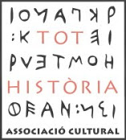

Crèdits
Un projecte promogut per:
Districte de Ciutat Vella, Ajuntament de Barcelona
Estudi històric:
Tot Història Associació Cultural

Tractament, publicació de dades i cartografia interactiva:
300.000 Km/s
A Ciutat Vella, hi ha més de 600 carrers que amaguen una història diferent darrere del seu nom. Alguns carrers porten el nom de famílies, oficis i llocs. Altres tenen nom d'home o de dona, de militar o de religiós. Carrers que van ser nombrats en l'època medieval i alguns que ho han estat més recentment.
Aquest nomènclator de Ciutat Vella pemet consultar l'explicació històrica de l'origen dels carrers del districte, filtrant-los segons el barri, el període històric o la temàtica relacionada amb el seu nom.
Districte de Ciutat Vella, Ajuntament de Barcelona

Tot Història Associació Cultural
300.000 Km/s